Change Row Settings In Visual Composer
Click Edit this row icon after adding element in Visual Composer 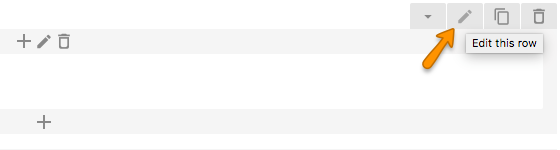
We will explain little with respect to BuilderPress theme. But you can explore all options to use them with your requirements. 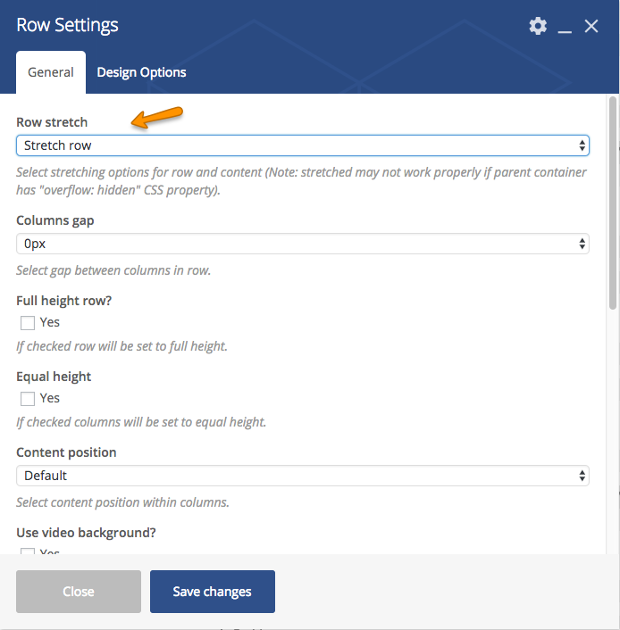
Mostly BuilderPress elements use Stretch Row option in Row Stretch. But if you are going to add Home Main Slider, it is recommended that Stretch row and contents(no paddings) is selected. 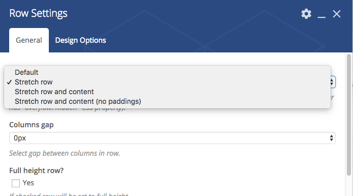
In 
Setup Contact Form 7
To setup contact form 7 make sure the pulgin is installed and activated.
Go to WordPress Admin > Contact > Add New 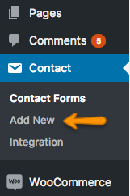
Set Forms with respect to your requirements. 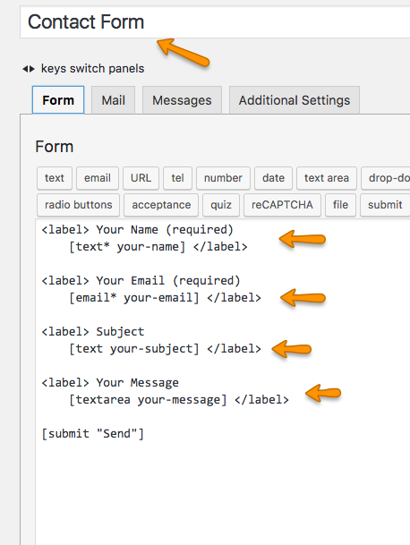
In Mail tab, setup fields. 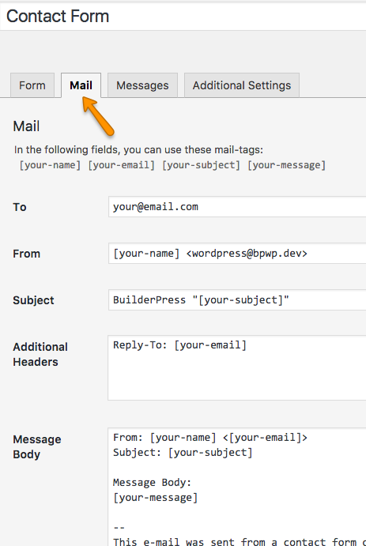
You can also edit the messages in Messages tab. Click "Save" when all done

Now go to WordPress Admin > Contact > Contact Forms 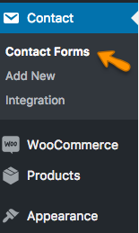
Copy the shortcodes and paste it where you want to display i.e Visual Composer Contact Form element. 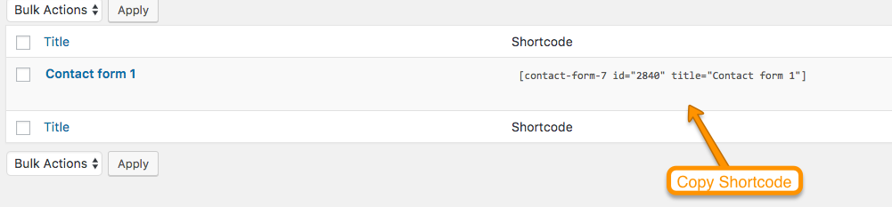
Modify Theme Styles
There are various options available to modify styles in this theme.
- Go to Customzier > Additional CSS and add styles there. 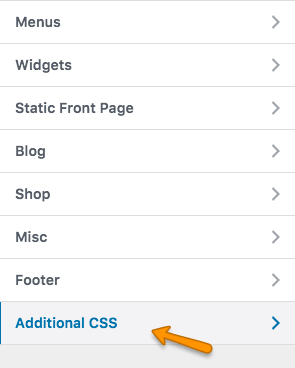
- If you want to add styles in theme CSS file, it is recommended that you use child theme's child-custom.css 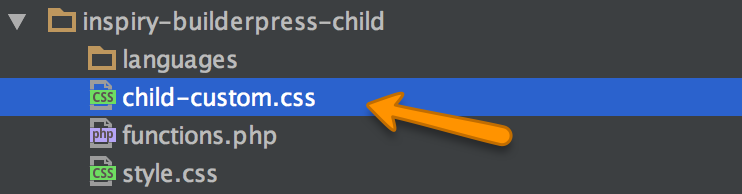
- If you do not want to use child theme, then use custom.css in parent theme. 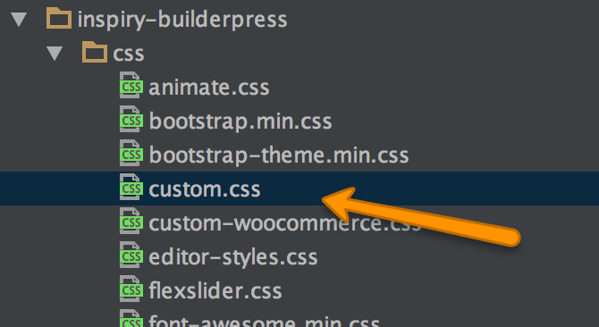
Translate The Theme
This theme is translation ready.
For translation to only one language please visit This Knowledge Base Article.
Hire Customization Services
If you need some additional features or want modification in existing theme features then you can contact theme customization service providers like